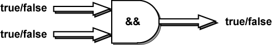

Antwort:
Wie viel Mehl haben Sie? 6
Wie viel Zucker haben Sie? 4
Genug fuer Plaetzchen!
Wenn die Ausführung zur if-Anweisung kommt, findet sie, dass
mehl >= 4 — wahr ist, da 6 >= 4
und
zucker >= 2 — wahr ist, da 4 >= 2
Beide Seiten sind wahr, also ergibt AND wahr.
AND-Operator
Der AND-Operator
verlangt, dass beide Seiten wahr sind:
diese Seite muss wahr sein && diese Seite muss wahr sein
Wenn beide Seiten wahr sind, ist der gesamte Ausdruck wahr. Wenn eine der beiden Seiten (oder beide) falsch sind, ist der gesamte Ausdruck falsch. && ist ein logischer Operator, da er zwei true/false-Werte zu einem
einzelnen true/false-Wert verknüpft.

So funktioniert der && -Operator:
true && true = truefalse && true = falsetrue && false = falsefalse && false = false
Verwenden Sie AND, wenn alle Bedingungen erfüllt sein müssen.
FRAGE 5:
Betrachten Sie den logischen Ausdruck:
mehl >= 4 && zucker >= 2
Was wird der Ausdruck ergeben, wenn mehl = 2
und zucker = 0 ist?